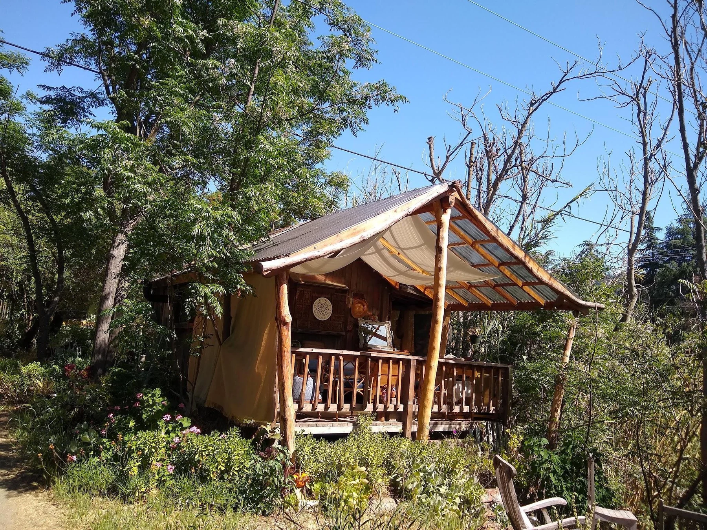
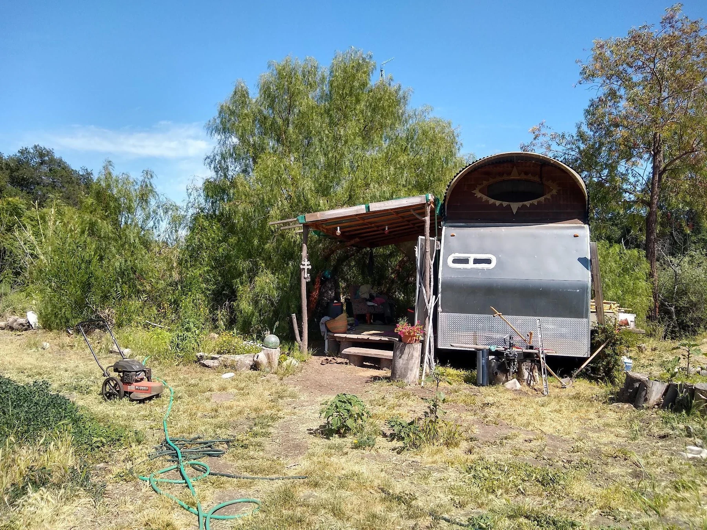
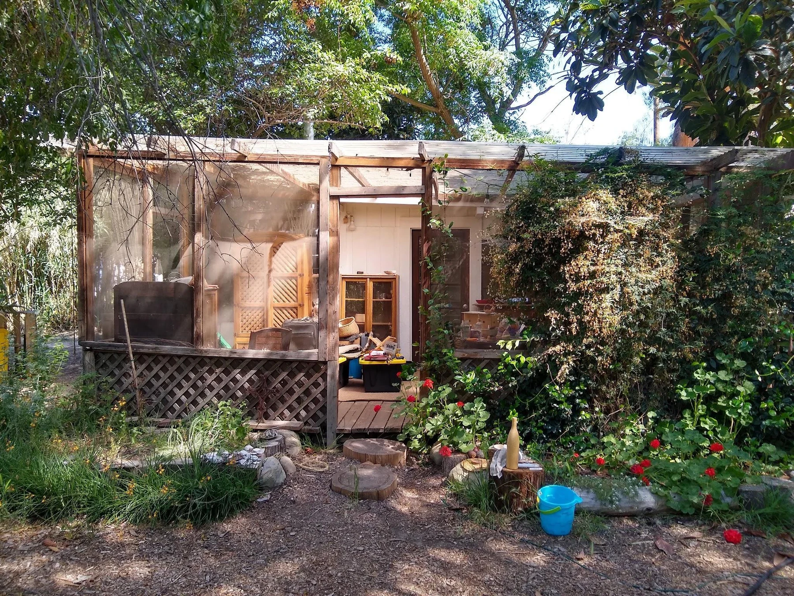
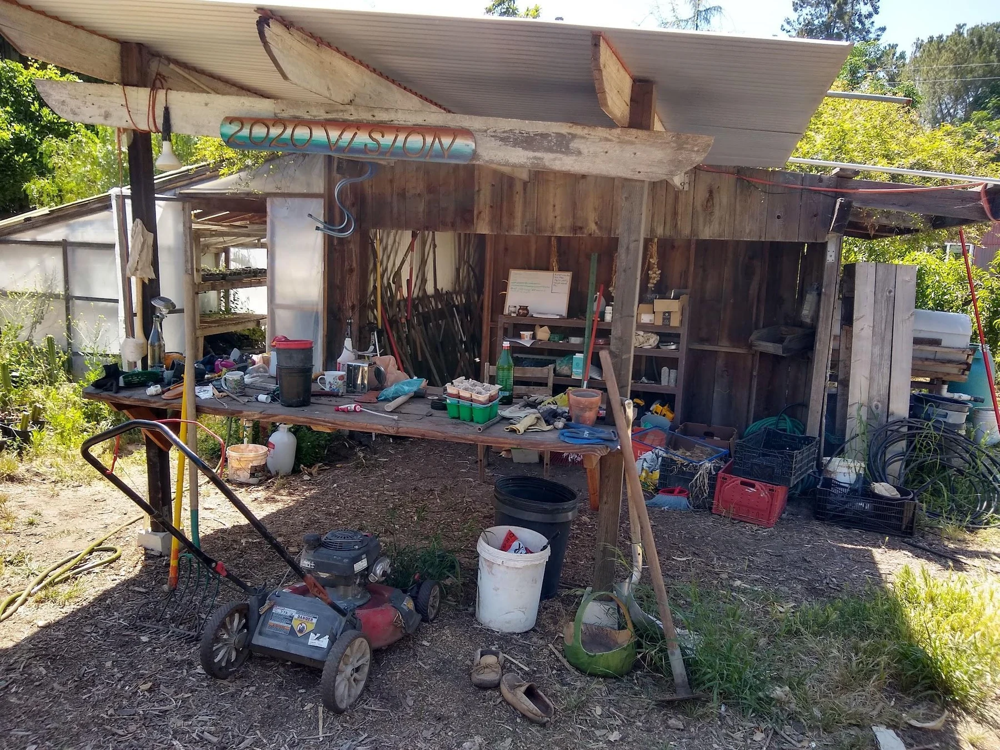
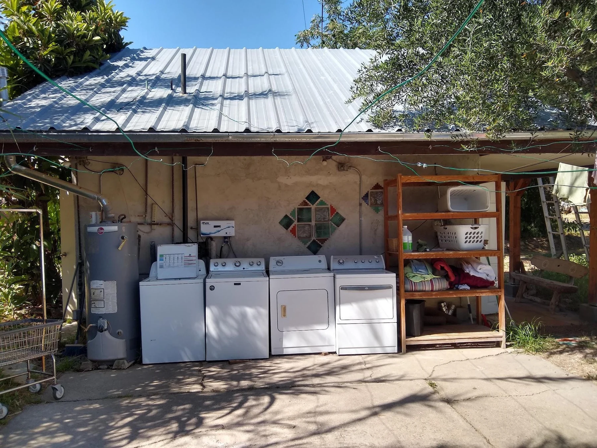
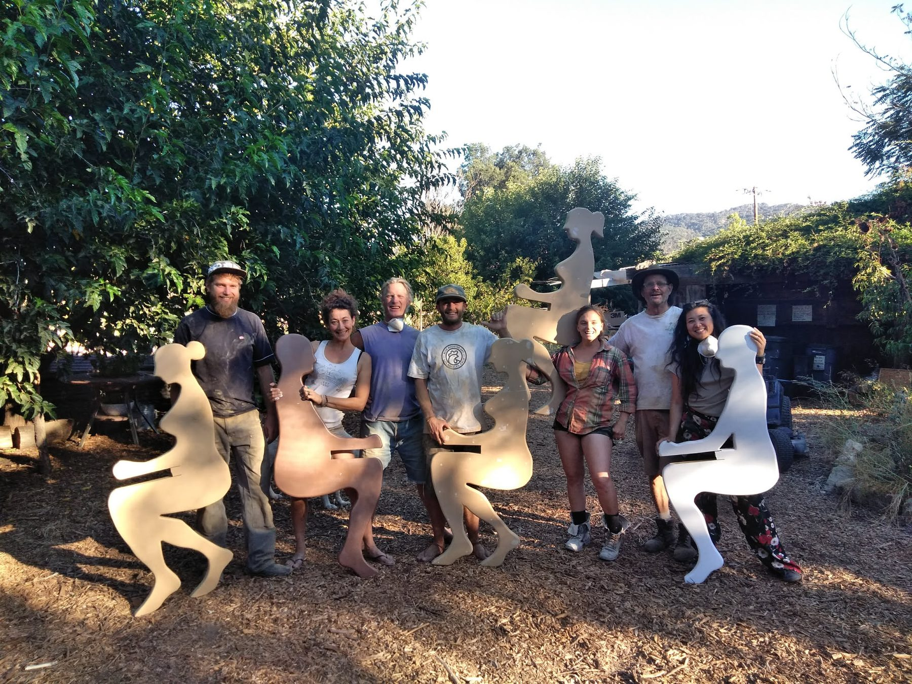
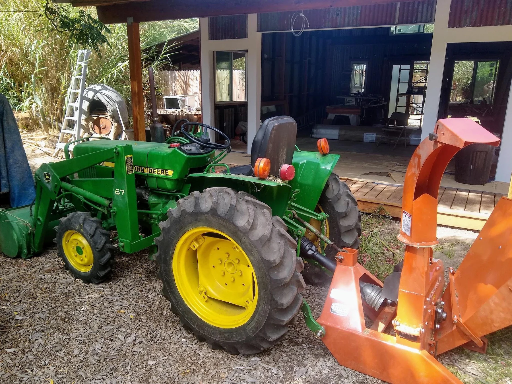
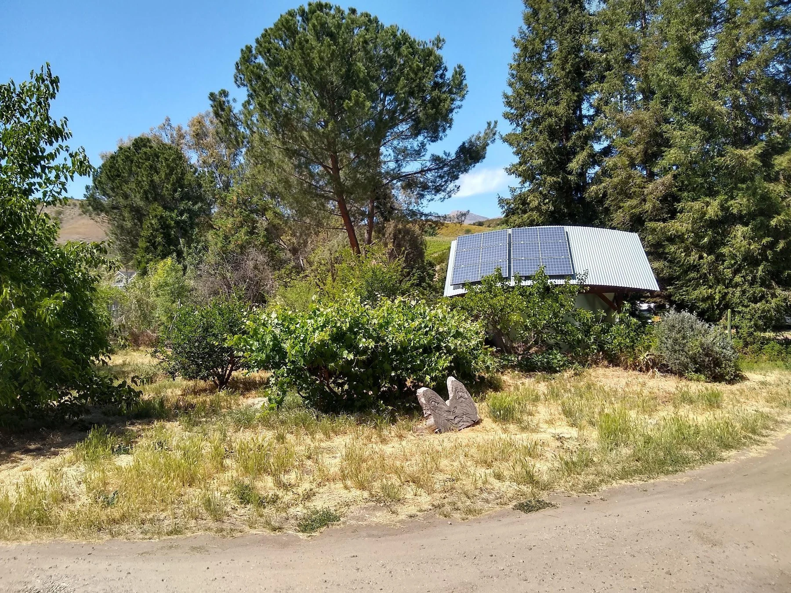
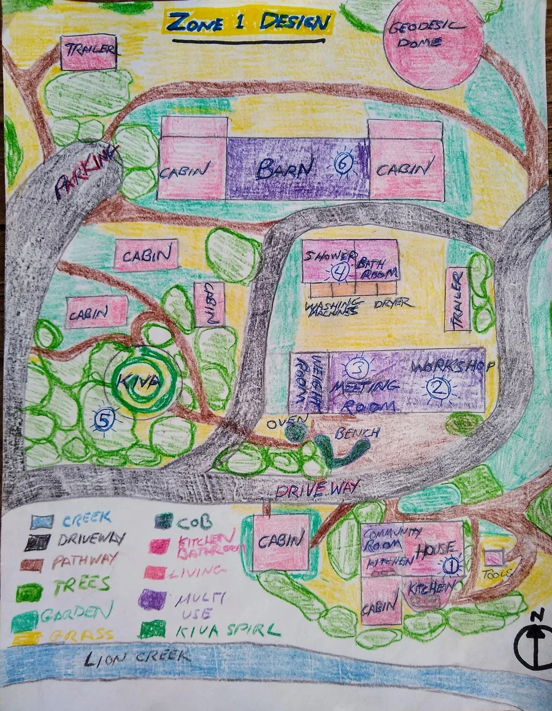

Studio cabin
A room extended outdoors
A single-room cabin gained usable living space from its deck, tree cover and relationship to the paths and shared center.
Chapter 06 · Buildings & energy atlas
Full Circle Farm grew as a small village: one main house, many modest dwellings, shared workshops and utilities, and a long habit of repairing, adapting and building with what was available.

A built landscape assembled over decades
By 2022, about twenty people lived among cabins, trailers, motorhomes, tents, domes and shared buildings on 5.5 acres. The design did not call for a wave of new construction. Its central question was how to strengthen and better connect what already served the community.
01 · A village of small dwellings
Living spaces ranged from conventional rooms and cabins to converted trailers, motorhomes, tents and earthen domes. Most were small; comfort depended as much on shade, decks, gardens and nearby shared facilities as on interior floor area.

A single-room cabin gained usable living space from its deck, tree cover and relationship to the paths and shared center.

Reuse allowed an existing vehicle shell to become a dwelling without constructing an entirely new building.

The workbook records a basic kitchen, three small rooms and rental income supporting the wider community.
Compact, sculptural and unusually fire resistant, the dome demonstrated a very different relationship between shelter and local climate.

A shaded place for tools, pots and day-to-day materials mattered because it sat close to where those things were used.
Site photographs and structure survey, workbook pp. 23–35, 49–50
02 · Shared infrastructure
The workshop, meeting room, bathhouse, laundry and gym were not secondary amenities. They were the connective tissue that allowed many small households to operate as one community.

Directly across from the house, the workshop saw constant use for maintaining buildings, vehicles, water systems and farm equipment.

A former dirt-floor dance space was being finished with a concrete floor, doors, walls and plaster for meetings, events and performances.

Washing machines, dryers, clotheslines, a shower, bath and toilet concentrated services while creating major greywater opportunities.

Leftover construction material and donated equipment became a frequently used community facility with very little new consumption.


The farm shared tools, vehicles and work spaces. That made repair culture a form of energy conservation: extending the life of existing things avoided the cost, materials and embodied energy of replacement.
03 · Regional materials and natural building
The regional buildings survey looked beyond conventional timber framing toward traditions and materials adapted to heat, dryness, wildfire and local availability.
The workbook names Chumash use of willow and adobe as regional traditions grounded in locally available materials.
Earthen walls, earthbag domes and reclaimed-material construction were identified as possible alternatives to standard stick framing.
Earthen construction offers thermal mass and fewer combustible wall materials—valuable qualities in a hot, fire-prone region.
The workbook notes that building codes and established material industries can make natural construction more difficult to permit and normalize.
04 · Energy systems
The 2022 energy plan combined passive comfort, wood heat, shared infrastructure and a proposed transition away from expensive grid electricity.
Trees and exterior shade reduce summer heat before machines are considered.
Many dwellings used wood stoves supplied by tree maintenance and locally available firewood.
Community rooms, laundry and workshops concentrate appliances and tools.
A reinforced workshop/community-room roof was planned to carry thirty panels.

The community still relied on expensive grid power for most electrical needs.
Wood heat was common because pruning, tree removal and regional sources made fuel accessible.
Residents relied on shade and adaptation despite summers described as intensely hot.
Efficient masonry heaters and additional shade were identified as future improvements for shared spaces.
Client outcomes and energy plan, workbook pp. 49–50, 83, 101–102
05 · Zone 1 relationships
The house, workshop, meeting room, bathhouse, barn, kiva and surrounding dwellings formed one enlarged Zone 1. Their value came from relative location: kitchens near meetings, workshop near repair needs, laundry near clotheslines, and shared paths crossing throughout the day.

Two kitchens, shared meals, meetings, four residents and the most heavily used indoor community room.
Repair center and the proposed structural base for the larger solar array.
Dance floor, stage, events and a future dedicated space for community governance.
Shower, bath, toilet, laundry, clotheslines and a major greywater connection to nearby gardens.
A sacred and social gathering place needing renewed shade after surrounding trees were removed.
Long-term storage proposed for later conversion into art and office space with a cob floor and rainwater tanks.
06 · Implementation and stewardship
The strongest building strategy in the workbook was incremental. Work was phased according to shared benefit, limited funds and the condition of existing structures.
Complete walls, plaster, doors and structural reinforcement so the space can support meetings, events and the proposed solar roof.
Use the large shared roof rather than scattering small systems across many dwellings.
Connect bathhouse, laundry and dwelling greywater to productive beds while improving path lighting and clothesline use.
Repair the roof, add a poured earthen floor, create art and office space, and pair the roof with rainwater storage.
Add appropriate storage or a tractor garage rather than constructing more housing.
Roof work, shade, fire clearance, tool care and small repairs preserve more value than neglected expansion.